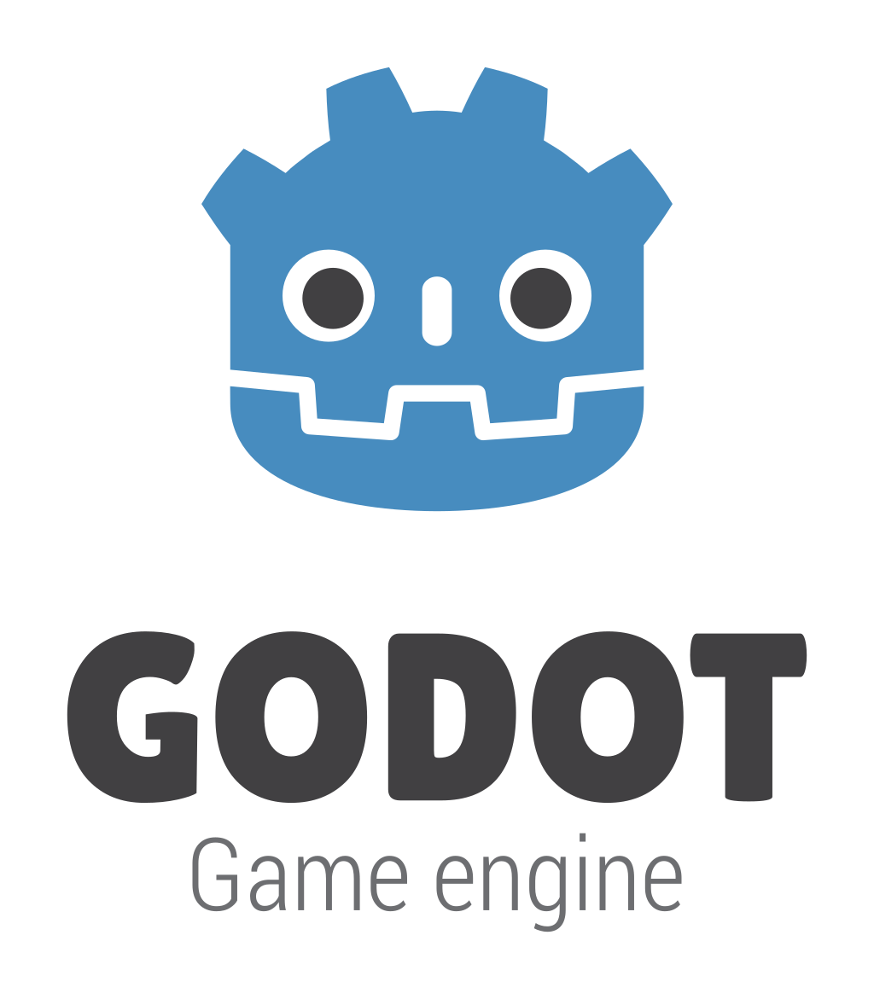
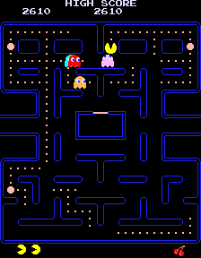
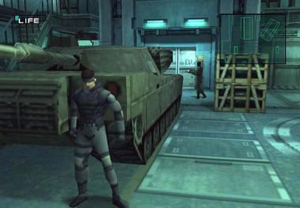
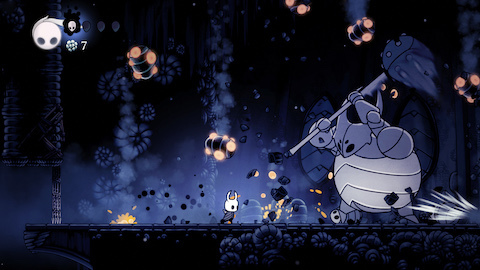
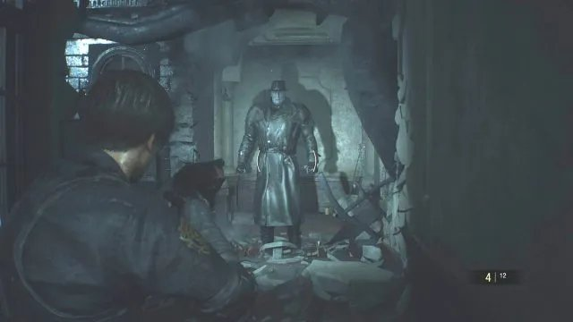
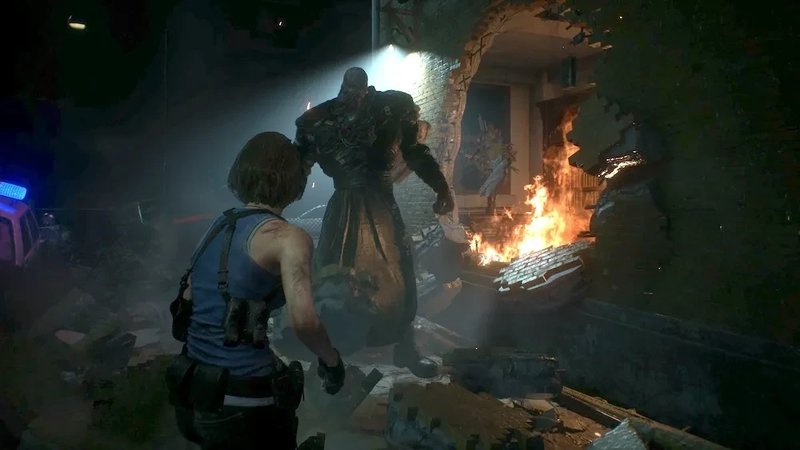
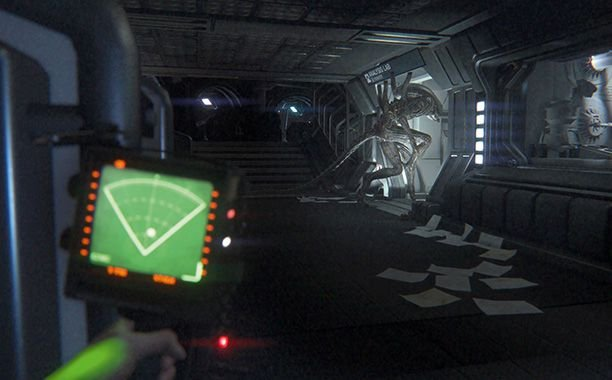

Cómo un enemigo decide qué hacer. De una regla suelta a una máquina de estados, y de un enemigo a la partida entera.
“El slime de la semana pasada tiene una sola idea. Hoy recibe varias, y la capacidad de cambiar de idea.”

enum y matchReglas simples que parecen inteligencia. Pac-Man y Space Invaders.
Un semáforo con botones. La máquina como clase. Mario chico, grande y fuego.
Cómo ve, el spaghetti de if, la máquina del jefe y la histéresis.
Pac-Man, Metal Gear, Hollow Knight y Boo. Ejercicio: encontrar una máquina.
El grupo, el perseguidor, los dos cerebros y el director.
proyecto-clase. Las demos se miran: el jefe se programa en la Clase 8+.Aparece → persigue al jugador → lo toca. Siempre lo mismo. A los 10 segundos ya se sabe exactamente qué va a hacer. Es predecible, y lo predecible aburre.
Que aceche al jugador de lejos, despacio. Que al acercarse el jugador lo vea y salga a perseguirlo a toda velocidad. Que al alcanzarlo ataque. Que si el jugador se aleja mucho, se calme y vuelva a acechar. Y que cuando recibe un golpe, lo sienta.
if… muchos if. Y ahí está el problema que se resuelve hoy.Machine learning, redes neuronales, ChatGPT. Nada de eso corre dentro de un enemigo de videojuego.
Un conjunto de reglas simples que hacen que el enemigo parezca que piensa. Comportamiento creíble, no inteligencia real.
🎮 Dos ejemplos famosos para empezar: Pac-Man y Space Invaders. Ninguno tiene más de tres líneas de “inteligencia”.
Parece que los fantasmas se coordinan para rodear al jugador. No hay coordinación: cada uno tiene una regla de una línea. Blinky (rojo) apunta a la casilla de Pac-Man. Pinky (rosa) apunta cuatro casillas adelante, así que le sale al cruce. Con dos reglas distintas ya se siente que lo encierran.
# Blinky (rojo): persigue directo objetivo = pacman.position # Pinky (rosa): apunta 4 casillas ADELANTE de Pac-Man objetivo = pacman.position + pacman.direccion * 4 # Inky y Clyde: otras dos reglas, igual de cortas
Y cada tanto entran en modo Scatter: se van a su esquina y dejan respirar al jugador. La regla de oro: divertido, no perfecto.
Los aliens aceleran a medida que mueren, y el final de cada oleada es pura tensión. No fue diseño: el hardware dibujaba más rápido cuantos menos sprites había en pantalla. Tomohiro Nishikado lo vio, le gustó, y lo dejó.
# Cada vez que muere un alien, los que quedan se apuran func _on_alien_muerto(): vivos -= 1 velocidad = velocidad_base * (55.0 / vivos)
Una sola línea de “IA” y es el mecanismo más recordado del juego. Lo que se siente bien, se queda.
Una regla cada uno. Hacen siempre lo mismo.
Varios comportamientos, y reglas para pasar de uno a otro.
En inglés: Finite State Machine (FSM). “Finita” porque los estados son pocos y conocidos de antemano.
| Cosa | Estados |
|---|---|
| 🚦 Semáforo | verde · amarillo · rojo |
| 🚪 Puerta | abierta · cerrada · con llave |
| 🛗 Ascensor | quieto · subiendo · bajando |
| 📱 Celular | apagado · bloqueado · desbloqueado |
Una puerta con llave no se abre empujando: el evento “empujar” no tiene flecha desde ese estado.
El recuadro punteado agrupa: falla la luz sale de cualquiera de los tres.
class_name Semaforo extends Node2D enum Estado { VERDE, AMARILLO, ROJO, INTERMITENTE } var estado = Estado.ROJO # UNA variable func pasar_tiempo(): # un evento = un método match estado: # según el estado actual… Estado.VERDE: cambiar_estado(Estado.AMARILLO) Estado.AMARILLO: cambiar_estado(Estado.ROJO) Estado.ROJO: cambiar_estado(Estado.VERDE) func fallar(): if estado != Estado.INTERMITENTE: cambiar_estado(Estado.INTERMITENTE) func arreglar(): if estado == Estado.INTERMITENTE: cambiar_estado(Estado.ROJO) func cambiar_estado(nuevo): # la única puerta estado = nuevo queue_redraw()
| Propiedad | estado: una sola variable |
| Métodos | los eventos: pasar_tiempo(), fallar(), arreglar() |
| Una puerta | cambiar_estado(): todo cambio pasa por ahí |
$Semaforo.pasar_tiempo(). Quien llama no elige el color: decide el semáforo, según su estado.enum es la lista de estados, con nombre. match es un if/elif que compara una sola variable contra varios valores. Vuelve a aparecer con el jefe.
| Si está en… | y pasa… | pasa a… |
|---|---|---|
| CHICO | 🍄 hongo | GRANDE |
| CHICO | 🌼 flor | GRANDE |
| GRANDE | 🌼 flor | FUEGO |
| GRANDE | 💥 golpe | CHICO |
| FUEGO | 💥 golpe | CHICO |
| CHICO | 💥 golpe | MUERTO |
Para pensar: ¿qué fila se agregaría para la estrella, que vuelve invencible a Mario unos segundos?
| Comportamiento | Qué hace | En una línea |
|---|---|---|
| 🏃 Perseguir | Va hacia el jugador (ya está: semana 3) | dir = (jugador.position - position).normalized() |
| 🕵️ Acechar | Lo sigue de lejos, despacio | position += dir * vel * 0.5 * delta |
| ⚔️ Atacar | Se frena y pega cada tanto | if $Timer.is_stopped(): pegar() |
| 💥 Golpeado | On hit: knockback y congelado 0.5 s | position += dir_atras * 20 |
Area2D que detecte la bala venir. Queda para proyectos propios.instantiate() desde el jefe. Todo lo que hace falta ya se vio en la semana 3.Un número: si está a menos de X píxeles, lo vio. Atención: el slime de la semana 3 no detecta nada, siempre sabe dónde está el jugador y va. El distance_to lo usó el jugador para elegir a quién disparar; ahora lo recibe el enemigo, para que decida.
var d = position.distance_to(jugador.position) if d < 250: # ¡lo vi!
Simple, barato, sirve para el 90 % de los casos. Es lo que usa el jefe.
Un Area2D hijo del enemigo, con forma de círculo o cono. Cuando el jugador entra, se emite body_entered; cuando sale, body_exited.
Más flexible: conos de visión, sigilo. Es exactamente el cono de Commandos, y todo lo que necesitan ya lo vieron en la Clase 4.
Hecho en Madrid por Pyro Studios. Cada soldado tiene un cono de visión dibujado en el piso. En la zona clara ve al comando siempre. En la zona oscura, solo si está de pie: agachado, pasa. Todo el sigilo del juego sale de esa única regla.
# El cono es un Area2D hijo del soldado (Clase 4) func _on_cono_body_entered(body): if body.is_in_group("comando"): if zona == CERCA or body.de_pie: dar_alarma()
Y esto ya se sabe hacer: un Area2D con forma de cono y la señal body_entered. Es el guardia de la derecha en la demo 05.
if se vuelve un spaghettifunc _process(delta): if golpeado: if $TimerGolpe.is_stopped(): golpeado = false elif lo_vi and not atacando: perseguir(delta) if d < 40: atacando = true elif atacando and not golpeado: atacar() if d > 60: atacando = false elif not lo_vi: acechar(delta) if d < 250: lo_vi = true func recibir_dano(cantidad): golpeado = true # ¿y atacando? ¿y lo_vi? ¿los toco o no? # ¿y si golpeado y atacando son true a la vez? 🤯
En vez de tres booleanos, una variable: estado. El jefe está en un estado a la vez y solo cambia por transiciones definidas.
| 🚦 Semáforo | 🟣 Jefe | |
|---|---|---|
| Estados | VERDE · AMARILLO · ROJO · INTERMITENTE | ACECHAR · PERSEGUIR · ATACAR · GOLPEADO |
| Qué dispara los cambios | pasa el tiempo · falla la luz · se arregla | la distancia al jugador · una bala · un Timer |
| Dónde se decide | en cada método (evento) | en _process, cada frame, y en recibir_dano() |
| Qué hace en cada estado | prende una luz | se mueve despacio, corre, pega o queda quieto |
enum para nombrar, match para elegir# enum: una lista de nombres. Cada uno # es un número por dentro, pero en el # código se usa el nombre. Cero confusión. enum Estado { ACECHAR, PERSEGUIR, ATACAR, GOLPEADO } var estado = Estado.ACECHAR
# match: un if/elif especializado para # comparar UNA variable contra varios # valores. Más limpio que elif, elif… match estado: Estado.ACECHAR: acechar(delta) Estado.PERSEGUIR: perseguir(delta) Estado.ATACAR: atacar() Estado.GOLPEADO: golpeado()
if estado == Estado.ACECHAR: … elif … y funcionaría igual. match es lo mismo, pero se lee como el diagrama._process: hacer + decidirfunc _process(delta): var d = distancia_al_jugador() match estado: Estado.ACECHAR: acechar(delta) # hacer if d < 250: estado = Estado.PERSEGUIR # decidir Estado.PERSEGUIR: perseguir(delta) if d < 40: estado = Estado.ATACAR elif d > 350: estado = Estado.ACECHAR Estado.ATACAR: atacar() if d > 60: estado = Estado.PERSEGUIR Estado.GOLPEADO: golpeado() # on hit: quieto y rojo if $TimerGolpe.is_stopped(): estado = Estado.PERSEGUIR
En cada estado, dos cosas y en este orden:
Comparado con el diagrama: cada if es una flecha. Falta una sola: la de entrada a GOLPEADO, que no depende de la distancia y vive en recibir_dano(). Se escribe en vivo en la Clase 8+.
Con el mismo número para entrar y para salir, un jugador parado en el borde hace que el jefe cambie de estado casi en cada frame. Con dos números, entre 40 y 60 se queda en el estado que tenía.
Se llama histéresis. La usa cualquier termostato: prende la estufa a 19 °C y la apaga a 21 °C, no las dos cosas a 20.

Es exactamente la máquina del jefe: flechas por tiempo y flechas por evento conviviendo. En 1980.

Timer a la vista, como el TimerGolpe del jefe.Todo el sigilo es jugar con esa máquina: esconderse hasta que el contador llegue a cero.

La recuperación es la ventana para pegarle: el equivalente al jefe golpeado, congelado medio segundo.
El fantasma Boo tiene una regla famosa: si Mario lo mira, se tapa la cara y se queda quieto. Si Mario le da la espalda, avanza. Si está lejos, flota en el lugar.
Estado.AVANZAR: avanzar(delta) if mario_me_mira(): estado = Estado.TAPARSE Estado.TAPARSE: # quieto: no hace nada if not mario_me_mira(): estado = Estado.AVANZAR
Lo nuevo: el “evento” no es un golpe ni un Timer, es hacia dónde mira el jugador. Y para no temblar en el borde, la demo 10 usa histéresis: avanza a menos de 300 px y vuelve a flotar a más de 380 px.
| Juego | Estados | Qué dispara los cambios | Cómo lo muestra |
|---|---|---|---|
| 👻 Pac-Man | scatter · chase · frightened · eaten | tiempo (reloj fijo) + evento (píldora) | el color azul y el parpadeo |
| ❗ Metal Gear Solid | patrol · alert · evasion · caution | evento (lo ve) + tiempo (contador) | el “!” y el contador en el radar |
| 🗡️ Hollow Knight | idle · aggro · aviso · golpe · recuperación | distancia + tiempo (animaciones) | la animación de aviso |
| 👻 Boo | flotar · avanzar · taparse | distancia + hacia dónde mira el jugador | se tapa la cara |
| 🟣 El jefe de hoy | acechar · perseguir · atacar · golpeado | distancia + evento (bala) + tiempo (Timer) | la etiqueta encima y el rojo |
Así como se analizaron Pac-Man, Metal Gear, Hollow Knight y Boo: elegir un caso propio y desarmarlo en papel.
enum. ¿Cuál es el inicial?Unos 5 minutos para elegir el caso y 10 para desarrollarlo. Al final, dos o tres diagramas se comparten con el grupo.
Qué hace él solo. La máquina de estados de toda la clase.
Reglas de movimiento entre vecinos: que no se choquen, que se repartan.
Una máquina simple, más alguien que decide cuándo aparece.
Una IA que no maneja a nadie: maneja cuándo y cuántos.
Todos los slimes van al mismo punto, así que terminan uno encima del otro. Una regla más lo arregla: alejarse un poco de cada vecino que se toca.
# En el _process del slime, después de perseguir for otro in get_overlapping_areas(): if otro is Enemigo: position += (position - otro.position).normalized() * 90 * delta
Es la primera de las tres reglas de los boids de Craig Reynolds (1987): separación, alineación y cohesión. Con las tres salen bandadas de pájaros y cardúmenes. Nadie dirige el grupo: cada uno mira a sus vecinos.
| Enemigos | Todos contra todos cada uno mira a todos | Vecinos (Area2D)cada uno mira a los que toca |
|---|---|---|
| 10 | 90 comparaciones | unas 30 |
| 100 | 9.900 | unas 300 |
| 300 | 89.700 · ≈ 30 FPS | unas 900 · más de 100 FPS |
| 600 | 359.400 · ≈ 5 FPS | unas 1.800 · más de 100 FPS |
FPS medidos con la demo 11 en una PC de escritorio. En otra computadora cambian los números, no la proporción.
Todos contra todos: con n enemigos, cada uno revisa a los otros n − 1. El doble de enemigos es cuatro veces más trabajo.
Con el Area2D, el motor de física ya sabe quién toca a quién. Cada slime revisa solo a sus 2 o 3 vecinos.


Un enemigo que sigue al jugador por todo el mapa. No es rápido ni inteligente: lo agobiante es que no para. Sus reglas son pocas:

El director mantiene al alien cerca, pero nunca le dice dónde está el jugador. El alien tiene que encontrarlo de verdad. Resultado: siempre anda rondando, y esconderse funciona.
Es lo de Mr. X separado en dos: un cerebro decide cuándo y dónde, el otro qué hacer.
El director no maneja a ningún zombi. Mide la intensidad: cuánto daño recibe el grupo y cuántos enemigos tiene encima. Según eso, decide cuándo y cuántos aparecen.
# En el survivors sería cambiarle el ritmo al Timer del spawner match estado_director: Director.ACUMULAR: $TimerSpawn.wait_time = max($TimerSpawn.wait_time - 0.1, 0.3) Director.PICO: $TimerSpawn.wait_time = 0.3 Director.CALMA: $TimerSpawn.stop()
Tres estados, como el semáforo. Lo que cambia es qué controla: no a un enemigo, sino a la partida entera.
Left 4 Dead. El director no hace el juego más fácil ni más difícil: lo hace ondular. Tensión, pico, respiro. Lo que busca es que nunca sea monótono.
Resident Evil 4. Una escala oculta sube o baja la agresividad y el daño de los enemigos según cómo le va al jugador. Quien muere seguido, recibe enemigos más blandos, y no se entera.
En la bibliografía: pacing y dynamic difficulty adjustment (DDA).
| Idea | En una línea |
|---|---|
| IA de un juego | Reglas simples que hacen que un enemigo parezca pensar. Divertida, no perfecta |
| Máquina de estados | Una variable estado, un estado a la vez, transiciones definidas por eventos |
| Es una clase | Los eventos son métodos, y todo cambio pasa por cambiar_estado() |
| Detectar | Por distancia (distance_to) o con un Area2D de visión |
enum + match | Nombrar los estados y elegir qué hacer en cada uno. Hacer, y después decidir |
| Tres disparadores | Distancia, evento (un golpe) y tiempo (un Timer) |
| Histéresis | Un número para entrar y otro para salir, para que no parpadee |
| Niveles de IA | El individuo, el grupo (separación), el perseguidor y la partida (el director) |
_process con matchACECHAR ⇄ PERSEGUIR, con una etiqueta que muestra el estadoATACAR con un Timer, y GOLPEADO al recibir dañocambiar_estado() para que cada cambio se notev2/semana-04/proyecto-clase) y probarlasIlustraciones propias. Capturas de juegos: uso educativo, © de sus dueños. · Logo y mascota de Godot © Godot Foundation — CC BY 4.0.